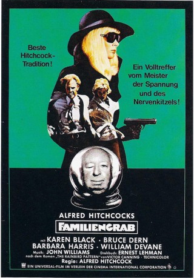

#3916 Hitchcock - Familiengrab
Alternativ: Family Plot
 
 IMDB-Wertung: 6.8 / 10
IMDB-Wertung: 6.8 / 10  Metascore: 0
Metascore: 0 
Blanche Taylor (Barbara Harris) und ihr Freund George (Bruce Dern), ein arbeitsloser Schauspieler und Taxifahrer, sind pleite und versuchen sich mit kleinen Gaunereien über Wasser zu halten. Die beiden wittern die Chance ihres Lebens, als sie die reiche Miss Rainbird kennenlernen und von ihr erfahren, dass sie auf der Suche nach ihrem verschollenen Neffen ist. Erstaunlicherweise ist die Suche sehr bald von Erfolg gekrönt – nachdem die beiden der alten Dame "netterweise" helfen. Doch ganz so einfach, wie die zwei es sich vorgestellt hat, ist das ganze nicht: der gefundene "Neffe" hat dummerweise gerade einen Bischof entführt – und das letzte, was er zur Zeit gebrauchen kann, ist eine sentimentale alte Tante und ein trotteliges Gangsterpärchen. Um irgendwie aus der Sache raus zu kommen, beschließt er kurzerhand, sie aus dem Weg zu schaffen...
Jahr: 1976
Dauer: 120 Minuten
FSK: 12
Land: USA Studio: Universal PicturesTonspuren:
Untertitel: Deutsch,
Auflösung: 720p (1280x696) Größe: 4474 MB
Genre: Thriller, Komödie
Regisseur:  Alfred Hitchcock
Alfred Hitchcock
Drehbuch: Darren Aronofsky
Soundtrack:
Darsteller:
 Karen Black als Fran
Karen Black als Fran Bruce Dern als George Lumley
Bruce Dern als George Lumley- Barbara Harris als Blanche Tyler
 William Devane als Arthur Adamson
William Devane als Arthur Adamson Ed Lauter als Joseph Maloney
Ed Lauter als Joseph Maloney Katherine Helmond als Mrs. Maloney
Katherine Helmond als Mrs. Maloney- Edith Atwater als Mrs. Clay
 William Prince als Bishop Wood
William Prince als Bishop Wood- Nicholas Colasanto als Constantine
 Charles Tyner als Wheeler
Charles Tyner als Wheeler- Elisabeth Brooks als Woman in Cafe with Priest , uncredited
 Alan Fudge als Helicopter Pilot , uncredited
Alan Fudge als Helicopter Pilot , uncredited Richard Hale als A.A. Adamson , uncredited
Richard Hale als A.A. Adamson , uncredited Alfred Hitchcock als Silhouette at Office of Vital Statistics , uncredited
Alfred Hitchcock als Silhouette at Office of Vital Statistics , uncredited Fran Ryan als Registrar Clerk , uncredited
Fran Ryan als Registrar Clerk , uncredited- Cathleen Nesbitt als Julia Rainbird
- Warren J. Kemmerling als Grandison
- Marge Redmond als Vera Hannagan
- John Lehne als Andy Bush
- Alexander Lockwood als Parson
- Martin West als Sanger
- Dee Carroll als Vera's Supervisor , uncredited
- Louise Lorimer als Ida Cookson , uncredited
- John Steadman als Old Man in Cemetery , uncredited
Datei: X:\Person\Hitchcock\Hitchcock - Familiengrab (1976, FSK12, 1280x696).mkv seit 30.06.2016
Festplatte: HD Collection-7+mehr(A-Z)+Person
 Es gibt insgesamt 25 Filme in der Gruppe 'Person\Hitchcock'
Es gibt insgesamt 25 Filme in der Gruppe 'Person\Hitchcock'